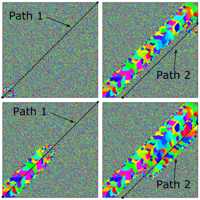

Syntax:
am path id start x0 y0 end x1 y1 speed V
Example
This snippet is taken from SPPARKS repository: examples/am_path/path_raster_a
# Convenience; define set of points to be used in path commands variable X0 equal 0.0 variable Y0 equal 0.0 variable X1 equal 500.0 variable Y1 equal 500.0 variable X2 equal 106.1 variable Y2 equal 0.0 variable X3 equal 500.0 variable Y3 equal 393.9
am path 1 start $X0 $Y0 end $X1 $Y1 speed 9 am path 2 start $X3 $Y3 end $X2 $Y2 speed 9 am path_layer 1 num_paths 2 path_ids 1 2 thickness 1
Description:
This command is used by am/ellipsoid, and potts/am_weld to specify raster scans in a very general way. This am path command specifies a line in the x-y plane using start x,y and end x,y points; path scan speed V is also part of the specification. Any number of am paths can be specified in a script; an am path can be associated with multiple am path_layers. The direction of travel is implied by starting and ending points.
The example commands above define two paths both each of which are associated with am path_layer 1. See depiction of simulation below.
Restrictions:
This rastering command can be used with app_style potts/am/weld or app_style am/ellipsoid.
Related commands:
The am path is a required element of am_path_layer
Default: none